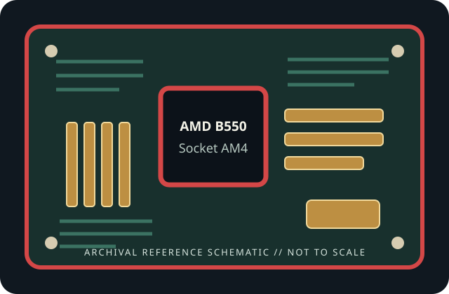

[ INDIVIDUAL COMPONENT // MOTHERBOARDS ]
MSI MAG B550 TOMAHAWK
AMD B550 Socket AM4 2020 mainstream ATX board. This static record describes this exact model and revision only; confirm the printed PCB identity and use the cited manufacturer's support files.

REVISION / FIRMWARE WARNING: Similar model names, PCB revisions and regional SKUs may differ in connectors, radio hardware and firmware. Identify the exact board printed on the PCB before selecting a BIOS.
Specifications
| Exact model / generation | MSI MAG B550 TOMAHAWK — 2020 mainstream ATX board |
|---|---|
| Chipset | AMD B550 |
| CPU socket / support | Socket AM4; processor families and minimum BIOS are limited to the exact manufacturer CPU support list. |
| Form factor | ATX, 305 × 244 mm |
| Memory support | Four dual-channel DDR4 DIMM slots; up to 128 GB. Supported rate, XMP and ECC behavior depend on processor, BIOS and MSI memory compatibility list. |
| PCI Express expansion | Two x16-length slots (CPU-connected PCIe 4.0 x16 and chipset-connected PCIe 3.0 x4) plus two PCIe 3.0 x1 slots. Primary-slot generation depends on the CPU. |
| Storage | Two M.2 sockets: upper CPU-connected PCIe 4.0 x4; lower chipset-connected PCIe 3.0 x4/SATA mode. Six SATA 6 Gb/s ports; installing a SATA-type M.2 drive disables a shared SATA port as described in the manual. |
| Rear I/O and network | Rear USB Type-C and Type-A including USB 3.2 Gen 2, HDMI/DisplayPort for an APU, 2.5GbE plus Gigabit LAN, audio. No onboard Wi-Fi; use an expansion adapter if wireless networking is required. |
| BIOS / manufacturer support | MSI Click BIOS with Flash BIOS Button; use model-specific BIOS/CPU support and update instructions. A firmware flash does not add support for an unlisted processor. |
Compatibility and installation notes
B550 exposes PCIe 4.0 only on the supported CPU lanes; the chipset path is PCIe 3.0. DDR4 only. Confirm CPU/BIOS, power connector requirements, M.2/SATA sharing and APU requirement for video output. This base model has no wireless radio.
Before assembly, confirm board revision, chassis dimensions/standoffs, CPU cooler mount and power leads in the manual. Never infer processor compatibility from the physical socket alone. For memory, follow the documented population order and consult the exact board's QVL; EXPO/XMP and other overclocked speeds are not guaranteed.
Read the lane-sharing tables before installing expansion cards and drives. Observe ESD precautions, protect socket contacts, and record the installed BIOS revision and any update history.
Preservation and service
Inspect the socket, DIMM slots, power connectors, M.2 thermal hardware and capacitors before use. Record PCB revision and serial/date codes, document repairs and test conditions, and retain model-matched manual and firmware files. Do not cross-flash firmware from a similarly named board.
Manufacturer sources
- MSI MAG B550 TOMAHAWK specificationsOfficial manufacturer documentation for this exact board; confirm current specifications and regional/revision-specific support.
- MSI MAG B550 TOMAHAWK BIOS, manual and CPU supportOfficial manufacturer documentation for this exact board; confirm current specifications and regional/revision-specific support.
Specification summary is static; manufacturer documentation and support lists for the physical revision are authoritative.